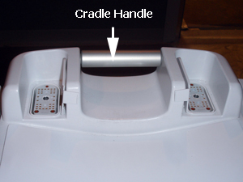
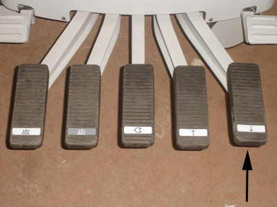
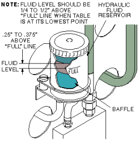

Operating Documentation
Direction 5500113, Rev# 3
Discovery MR750 3.0T Service Methods
Module Version 3.0, Version Date 8/19/08
Operating Documentation |
| Required Persons | Preliminary Reqs | Procedure | Finalization |
|---|---|---|---|
| 1 | 20 minutes |
| Item | Qty | Effectivity | Part# | Manufacturer | |
|---|---|---|---|---|---|
| Non-ferrous Screwdriver Set | 1 | - | - | - | |
| Item | Qty | Effectivity | Part# | Manufacturer |
|---|---|---|---|---|
| Hydraulic Fluid | 1 | - | 46-230006P2 | - |
No general safety information.
Disengage cradle from LPCA by turning the cradle release handle at rear of table. See Illustration 1.
Illustration 1: Cradle Release Handle

| NOTE: | Move LPCA into bore (about 4-5 inches) to ensure complete disengagement from cradle. |
Remove Upper Bellows (for details, see Patient Table Upper Bellows and Lower Base Side Cover Removal).
Drop table into FULL DOWN position by depressing far right pedal located at rear of patient table. See Illustration 2.
Illustration 2: Patient Transport Rear Pedals

View hydraulic fluid reservoir located at rear of patient table and determine if fluid needs to be added. See Illustration 3.
Illustration 3: Hydraulic Fluid Level Check

Pump table top to fully raised position by depressing second pedal from right. (LPCA reattaches with cradle automatically). See Illustration 1.
Add fluid as necessary based on observation from Step 4. See Illustration 2.
Replace Upper Bellows.
No finalization steps.